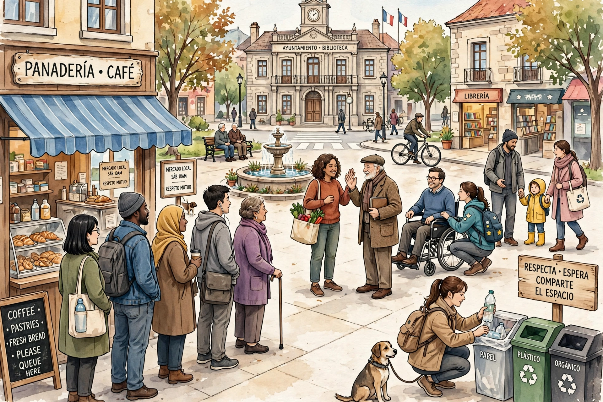

A social norm is a shared standard of acceptable behaviour by a group. Social norms can be informal understandings governing members of a society, or formalised into rules and laws. Deviance from norms elicits social sanctions ranging from disapproval to punishment.

Sociologist William Graham Sumner distinguished folkways (customs), mores (morally significant norms) and laws. Cristina Bicchieri distinguishes descriptive norms (what most people do) from injunctive norms (what is approved). Norms include conventions on dress, speech, queuing, reciprocity and greetings.
Norms emerge through repeated interaction, socialisation and enforcement, and are internalised as part of identity. They can change rapidly through tipping points, legislation or activism, as with smoking, seatbelt use and marriage norms. Game theory models norms as equilibria of coordination and sanctioning.